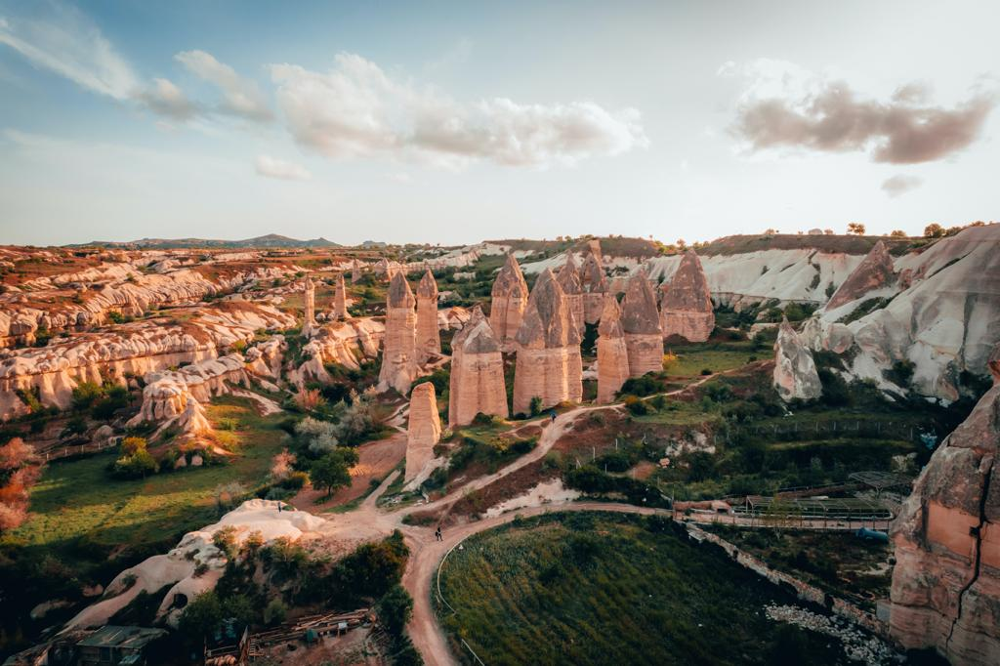

Explore every corner of the world with us

If you live in sunny and hospitable Georgia, tours from Tbilisi will help you see the beauty and attractions of other countries at a low cost.
With our help, everyone can visit any place in the world, tell us about their wishes! We'll take care of the rest on our own — we'll choose your options, think through routes and types of entertainment, prepare answers to your frequently asked questions, and help you get your travel documents ready. Travel to dozens of countries at no extra charge! The most exotic destinations are now available to our clients.
For example, Oman is the eastern pearl of the Arabian Peninsula, which is famous for its European standard of living, clean, deserted beaches and picturesque views. Here are collected the best gifts of nature: paradise oases of the desert, tropical forests and majestic mountains, gentle sea, rare representatives of flora and fauna, and even fjords with savannas!
TOP 10 Destinations for New Year's Eve Tours. Last-minute and great deals for the whole family in December 2024 and January 2025, as well as new promo codes and discounts.
The New Year is a special time when we take stock of our past, make bold plans for the future, and crave new experiences. Many people choose to celebrate this holiday not at home, but on the road, going to different parts of the world or exploring unfamiliar corners of their country. New Year's Eve tours offer a chance not only to change the environment, but also to plunge into the atmosphere of new places, cultures and traditions, to reboot emotionally and physically. In this article, we will look in detail at the possibilities of early booking, the best choice of destinations, the best holiday options in Russia and abroad, as well as the format and specifics of various New Year's trips — from active ski tours to relaxed holidays in spa hotels and from inexpensive options to luxury all-inclusive packages.
Installment tours with OnlineTours
Onlinetours is a service that aggregates current tours and special offers, providing customers with access to attractive prices and a wide range of destinations. Thanks to a detailed description of hotels, food options, infrastructure and attractions, users can easily find the best option for their vacation, and the support of consultants and convenient payment methods make buying a tour fast and safe.. Learn more at promo.onlinetours.ru
Travelata: Cheap New Year's Eve tours travelata.ru
Travelata is a convenient online tour selection service from leading tour operators, where you can compare prices, view current promotions and quickly book a suitable option. The site offers a wide range of destinations, from Russian resorts to exotic foreign routes, and a clear interface makes it easier to search and compare tours.. Learn more at travelata.ru
New Year's Travel Philosophy
The New Year in the modern world has become not just a calendar milestone, but a symbol of renewal, an opportunity to take a fresh look at the usual way of life, restart the energy sector and set new personal goals. More and more people are looking to celebrate the transition to the next year outside of the usual environment. Traveling during the New Year holidays opens up space for experiments-from romantic vacations by the sea to educational excursions to ancient cities, ski adventures or wellness programs in spa resorts. If earlier it was believed that the New Year should be celebrated at home, with family, but today the boundaries of traditions have expanded. Many travel to far-flung corners of the country or abroad, using New Year's Eve tours to combine vacations with exploring the world's cultural, natural, and historical riches.
It is at this time of year that people are especially sensitive to the atmosphere of magic and the expectation of change. If you think about it, New Year's tours are not just a geographical movement, but a journey through time: It's like you're entering a new period of your life and you want to start it off with an inspiring experience. In addition, a holiday trip is a great way to bring family or friends together, make connections, or even have a private adventure that will allow you to take a breath and develop a strategy for the next year.
The importance of planning and early booking
Before considering travel options in detail, it is worth understanding why you should plan a trip for the New Year in advance. The New Year holidays are the peak tourist season for many destinations. The demand for the best hotels, interesting excursions and comfortable travel packages is growing at an incredible rate. That is why early booking of tours for the New Year has become one of the key tools for those who want to get the best value for money. When it comes to early booking tours for New Year 2025, you not only save money, but also get a wide range of dates, routes and holiday formats.
Imagine that you are choosing tours for the New Year 2025 long before the holiday, or even considering actual tours for the New Year 2024. You can easily think through the logistics, decide on the style of vacation – whether it's a quiet family vacation, active adventures or short weekend trips. Advance planning makes it possible to collect all the necessary information about weather conditions in the proposed region, compare prices, and study reviews of accommodation locations and programs. As a result, when others are frantically searching for something affordable, you will already have a confirmed reservation for the perfect New Year's tour for you.
Russia: from winter fairy tales to major megacities
Russia, boundless and diverse, offers a huge range of New Year's routes. Rich cultural traditions, diverse climatic zones and original cuisine-all this makes many people prefer New Year's tours in Russia. Sometimes people want to avoid the complexities of foreign flights, language barriers, and visa red tape, and instead experience their native flavor. It is the domestic destinations that are in demand when it comes to cheap tours for the New Year, because the infrastructure of domestic tourism is getting better every year.
Winter landscapes and northern magic
For those who dream of an authentic winter fairy tale, tours to Karelia for the New Year will be a great choice. This region is famous for its pristine forests, clear lakes and unique traditions of indigenous peoples. Dog sledding, exploring Pomeranian cuisine, snowmobiling-all this creates a unique atmosphere. Similarly, New Year on Lake Baikal tours will allow you to see a majestic lake framed by ice and snow, and New year on Lake Baikal 2025 tours will allow you to look even further into the future, planning a trip many months in advance. Lovers of mountain landscapes will appreciate tours to the Altai for the New Year, where the grandeur of the peaks covered with fluffy snow is surprisingly combined with the comfort of small recreation centers. Similar impressions can be obtained by choosing New year in Altai 2025 tours or spending the holidays in the Urals, going to the new year in the Urals tours.
Ski destinations and outdoor activities
For fans of outdoor activities on the slopes of the mountain become the best gift for the holidays. Ski tours for the New Year and their extended variation-ski tours for the New Year 2025-offer not only skiing, but also a rich festive program. In winter, Russian ski resorts such as Krasnaya Polyana, Dombay, Arkhyz or Sheregesh turn into winter recreation centers. You can go on a New Year's Day tour to Arkhyz, enjoy high-quality trails and modern lifts. Skiers and snowboarders who dream of new heights choose New Year's Elbrus tours or explore the Caucasus Mountains by stopping at Dombay New Year's Tours or Dombay New Year 2025 tours. These courses are good for all levels of athletes: from beginners to confident professionals.
Cultural centers, capitals and historical routes
For those who appreciate history, architecture, and cultural attractions, we recommend New Year's Day tours to St. Petersburg, New Year's Day Tour to St. Petersburg, and New Year's Day tour to St. Petersburg 2025. The northern capital is decorated with elegant lights, festive fairs and Christmas windows that glow brightly. From here you can easily go to the suburbs, admire the palace ensembles and immerse yourself in the atmosphere of Russian winter holidays. For those who live in the capital, there are New Year's Eve tours from Moscow that take you away from the hustle and bustle of the city and give you new experiences. If you decide to stay in the metropolis, you can consider New Year's Eve 2024 tours from Moscow or even last-minute tours from Moscow for the New Year, so that in a matter of days you can choose a decent option.
Among the historical centers, a special place is occupied by tours of the Golden Ring for the New Year, which allow you to get acquainted with the ancient cities of Yaroslavl, Kostroma, Suzdal and Veliky Novgorod. A pleasant weekend can be arranged through a New Year's Day tour to Kostroma, a New Year's Day tour to Kostroma 2025, a New Year's Day tour to Yaroslavl, a New Year's Day tour to Vologda, or a New Year's Day tour to Novgorod. Russian cultural centers are transformed into magical fairy-tale scenery, and the absence of massive queues to museums is often a pleasant bonus of the winter season.
Regional diversity and unconventional routes
Russia is huge, and each of its regions has something special to offer. New Year's Eve tours to Kazan will introduce you to the culture of the Tatar people, where European and Asian traditions are intertwined in a unique pattern. Kaliningrad New Year's Eve tours or Kaliningrad New Year's Eve 2025 tours will allow you to experience the special atmosphere of the western outpost of Russia, and Kaliningrad New Year's Eve tours from Moscow will simplify logistics for the capital's residents. For those who want to go to the south, there are tours to Sochi for the New Year and tours to Sochi for the New Year 2025-here you can combine walking by the sea with skiing on the mountain slopes, because the region is famous for its climatic contrast. If you are looking for really unusual routes, pay attention to the Murmansk New Year tour, Murmansk New Year 2025 tour, Teriberka New Year tour, where you can get under the Northern Lights and taste the freshest seafood. A New Year's tour to Crimea will allow you to look at the peninsula without summer crowds of tourists, appreciating its mild climate and rich historical heritage.
In addition, tours to Abkhazia for the New Year 2025, tours to Dagestan for the New Year, a tour to Dagestan for the New Year 2025, tours to Adygea for the New Year, Adygea for the New Year 2025 tours, trips to the North Caucasus, acquaintance with national cuisines and culture of many peoples are popular. Do not forget about more local features: Kirov New Year's Eve tour, Tyumen New Year's Eve 2025 tours, Pskov New Year's Eve tours, and sanatoriums New Year's Eve tours where you can improve your health.
For the convenience of departure, there are a New Year's tour from St. Petersburg, a New Year's tour from Yekaterinburg, a New Year's Tour from Nizhny Novgorod, a New Year's Tour from Saratov, a New Year's Tour 2025 from Ufa, a New Year's Tour 2025 from Chelyabinsk, a New Year's Tour 2025 from Samara, a New Year's Tour from Astrakhan, New year's Eve from Rostov-on-Don tours, as well as routes from other cities that provide freedom of choice of starting point.
Foreign travel: a choice for lovers of exotics and the sun
If domestic tourism seems predictable to you, there is a vast world of outside destinations. Tours abroad for the New Year 2025 open up space for the wildest desires. Some people want to go to warm countries to spend a holiday on the beach, others want to see European capitals in the glow of Christmas lights.
Popular beach routes and oriental fairy tales
New Year's Eve tours to Egypt are suitable for lovers of warm seas. Such activities as diving and snorkeling, azure waters and all-inclusive holidays are provided in Sharm el-Sheikh and Hurghada. If you want to save money, you can catch last-minute tours to Egypt for the New Year or pick up Egypt tours from Moscow for the New Year, convenient for capital travelers. Similarly, for connoisseurs of oriental luxury, tours to the UAE for the New Year are good, tours to the UAE for the New Year 2025, where you can celebrate the holiday among the futuristic skyscrapers of Dubai. The perfect choice is Dubai New Year's Day Tour, Dubai New Year's Day Tour 2025, Emirates New Year's Day Tour, which guarantees an unforgettable experience with perfect service.
Those who prefer the more familiar Mediterranean should take a closer look at the offers to Turkey for New Year 2025 tours, where hotels prepare festive dinners, and the autumn-winter period allows you to experience Turkey outside the massive summer influx. Here you can also consider Istanbul New Year's Eve tours or Istanbul New Year's Eve 2025 tours to combine cultural shopping, walking through historical streets and gastronomic tourism.
Exotic destinations in Asia
If you dream of long-distance travel and exoticism, pay attention to tours to Thailand for the New Year, tours to Thailand for the New Year 2025, where the warm sea rules all year round in summer, and the cuisine is pampered with spices and fresh fruits. An important factor is the cost: you should know in advance Thailand tours prices for the New Year in order to plan a budget. Other offers are analyzed in the same way: Vietnam New Year tours, Vietnam New Year tours 2025, India New Year tours, China New Year tours, China New Year tours 2025, China New Year tours from Moscow, Hainan New Year tours. Each of these countries opens up a world of traditions, unusual celebrations, temples, markets and festivals.
European cities and holiday flavor
New Year's Eve tours to Europe are a great chance to see Christmas markets, taste mulled wine, go to street concerts, enjoy music and art. Depending on your preferences, you can choose between megacities and quiet towns. If you value Caucasian hospitality, you should take a closer look at tours to Georgia for the New Year or tours to Georgia for the New Year 2025, tours to Armenia for the New Year, tours to Serbia for the New Year. Tours to Belarus for New Year, tours to Belarus for New Year, tours to Belarus for New Year 2025, tours to Belarus for New Year 2025, tours to Minsk for New Year 2025 will help you feel the Slavic soul-all this expands the geography of travel without going far beyond the culturally close environment.
Some people are interested in the northern exotics: tours to Lapland for the New Year will allow you to meet Santa Claus, and Vladivostok China for the New Year is a non-standard route for residents of the Far East who want to immerse themselves in Asian culture. Fans of exotic overseas destinations will appreciate a New Year's Eve tour to Cuba, a New Year's Eve 2025 tour to Cuba, a New Year's Eve tour to the Maldives, a New Year's Eve tour to Bali, a New Year's Eve tour to GOA, and a New Year's Eve tour to Morocco.
TripGroup is a young, creative and reliable tour operator.
TripGroup
Location: Tbilisi, Taktakishvili str., 27
Email: tripgroup2024@gmail.com
Telephoe: +7 (000) 000-00-00